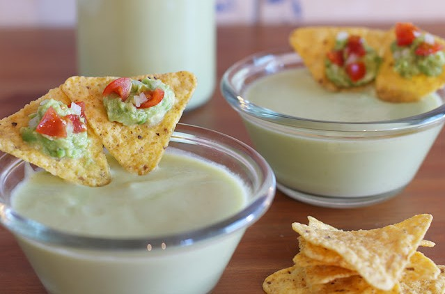
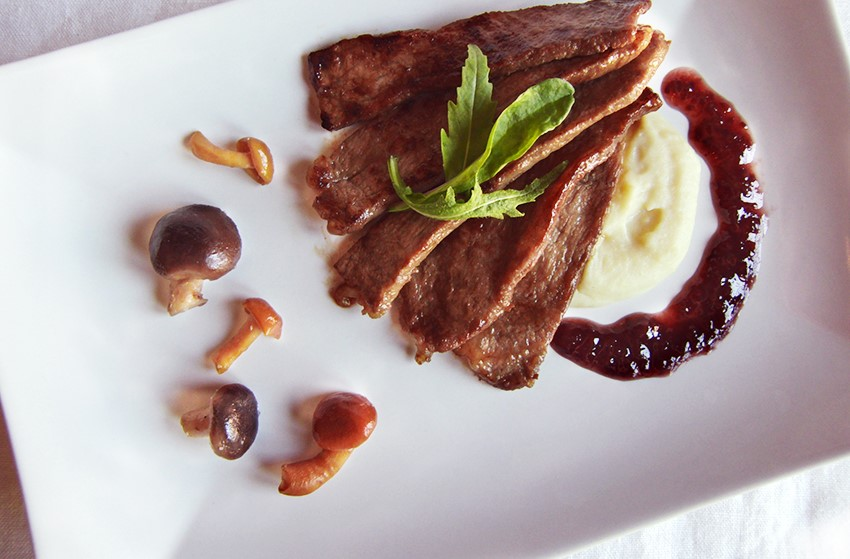

Cocina para todos
El blog donde amateurs y profesionales pueden aprender cosas nuevas en la cocina...


Gaspacho de aguacate y manzanas
18 de Junio de 2018

Un gazpacho es una crema fría con el tomate como ingrediente base. En este caso, he llamado gazpacho a este plato a pesar de que el tomate no está incluido en la lista de ingredientes. Entonces, ¿por qué ese nombre? Porque lleva cebolla y pimiento y está aliñado de manera similar. Si lo prefieres, podríamos denominarlo sopa fría de aguacate y manzana.
Leer más...
Mario876: Excelente receta y muy fácil!!!
Owen596: Tan fácil que no parece real!!!

m@ry32: La hice el otro día con mis hijos y les encancto ;D
Presa ibérica marinada estilo oriental
17 de Junio de 2018

La presa de cerdo es un corte de carne que se encuentra sobre la paletilla, concretamente en la escápula, lo que sería el hombro, formando parte del cabecero del lomo. De cada animal se extraen dos presas de unos 500 gramos, siendo de las piezas más preciadas del cerdo por ser de las más veteadas de grasa intramuscular, lo que hace que sean muy jugosas y sabrosas. La pieza de carne de presa tiene forma ovalada y aunque su sabor es muy rico siempre, se nota la diferencia cuando la carne procede de cerdo ibérico..
Leer más...
Mario876: Excelente receta y muy fácil!!!
Owen596: Tan fácil que no parece real!!!
m@ry32: La hice el otro día con mis hijos y les encancto ;D